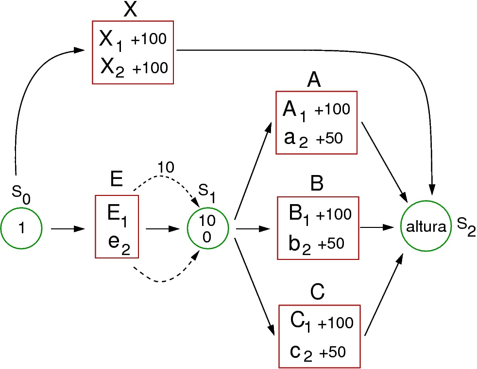

Planearemos en primer lugar la forma en que vamos a diseñar este carácter.
En primer lugar crearemos un gen que muestre una dominancia completa entre dos alelos. el alelo recesivo será responsable del enanismo, el alelo dominante producirá una altura normal que dependerá a su vez de varios otros genes con efecto acumulativo, con un alelo menor que incremente la altura cierto valor y un alelo mayor que lo incremente la altura en una mayor cantidad. Para que el alelo que causa el enanismo no deje actuar a los genes que determinan la altura de la planta deberá ejercer sobre todos ellos una epistasis recesiva.
Recordaremos del ejercicio anterior que conseguíamos esta interacción génica anulando un sustrato intermedio que interrumpía así la ruta hasta el fenotipo final. Sin embargo esto ocasionará que el valor fenotípico final sea 0. Necesitamos por tanto dar una altura mínima a las plantas mediante un gen sobre que no tenga interacciones con el que causa el enanismo. Si nos decidimos por implicar a tres genes con efecto aditivo en la altura de la plata, un diseño que cumpliría con las condiciones que acabamos de considerar podría ser el siguiente:

En esta ruta partimos del sustrato S0 con un valor 1, para que la ruta disponga de un sustrato de partida. Sobre éste actúa en gen X, con dos alelos codominantes que controbuyen por igual a la altura de la planta y que devuelven su valor directamente a S2, contribuyendo a una altura mínima de la planta de manera independiente al resto de los genes. Sobre S0 actúa también en gen E, cuyo alelo rececivo e2, con valor 0 produce la interrupción de la ruta en S1 cuando está en homocigosis, haciendo que no se sume el efecto de niguno de los genes A, B o C y causando por tanto enanismo en la planta. La presencia del alelo dominante E1 le da a S1 un valor 10 (que podrían ser una contribución de 10 cm a la altura final) y sobre S1 actúan con efecto acumulativo los genes A, B y C, con dos alelos cada uno, uno con un efecto mayor que contribuye con 100 cm, y otro con efecto menos que contribuye con 50 cm. Finalmente el efecto conjunto de todos estos genes ocasionarán una altura determinada de la planta, que podrá presentar también variaciones debidas a condiciones ambientales que pudieran afectar su crecimiento.